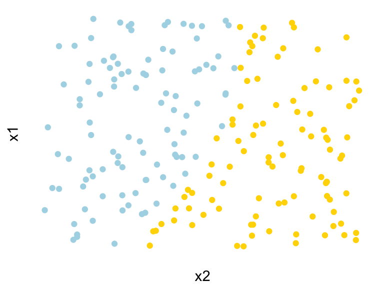
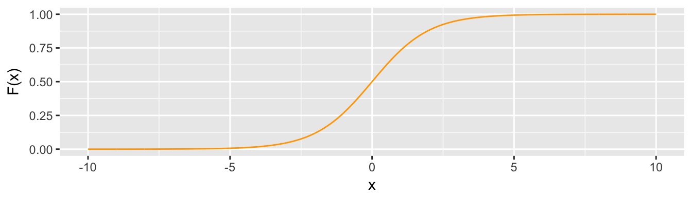
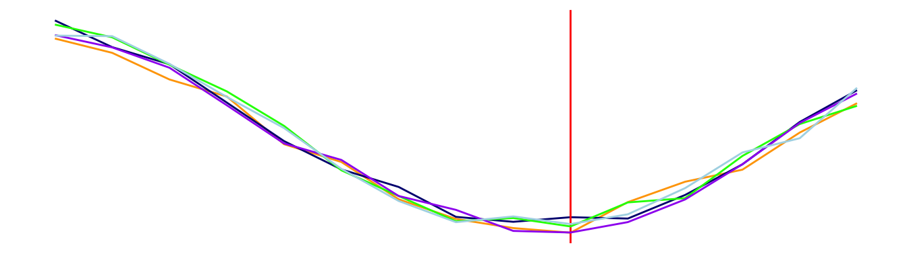

Chapter 9 Classification
9.1 Healthcare sans the politics
In many countries, universal healthcare has become a basic human right. In the United States, this is not currently a guarantee, shrouded in heated political debate and controvery whether its a matter of human rights or a matter in which an individual may choose his or her fate. Regardless of the politics, there is data on healthcare coverage.
According to the American Community Survey ACS, an annual survey of approximately 3.5% of the US population as conducted by the US Census Bureau, over 22.4% of residents of the U.S. state of Georgia were without healthcare coverage in 2009. That is a fairly sizable proportion of the population – for every ten people, between two to three did not have coverage. To some degree, this is [un]surprising. If you read the news in 2010, the then President of the United States championed a new law to provide affordable healthcare to the uninsured.
Leaving aside the operational logistics of coordinating and establishing the actual healthcare system, imagine that you are hypothetically tasked with getting the word out and drive recruitment in the state of Georgia. There is a hiccup, however. While commercial registries exist with people’s demographic and personal contact information, most statistics on coverage are based on surveys, thus we do not precisely know who does not have insurance. A brute force approach could be to reach out to everyone under the sun though we can easily infer a wasted effort as 776 of every 1000 people are already covered. Of the 224 people, they are likely to come from different walks of life, which means that the message will need to be cater to different target segments. How can we more efficiently target and identify audience profiles? For marketers, this is a classic targeting problem.
Data needs to enable the prediction and classification of a population into two classes: covered and not covered. This _binary problem or membership problem is known as a classification problem. By correctly classifying a population as covered and not covered, decision makers and outreach staff can mobilize targeted outreach. From a data science perspective, the real objective is to be able to identify and replicate re-occurring patterns in the training data, then generalize the insights onto a sample or population that is not contained in the sample.
In most environments, a data analyst will typically manually select population characteristics to use in cross tabulations to find statistical patterns; however, this tradtional approach can suffer from human bias that may yield misleading results. Some features may be more important than others, and humans usually do not systematically check all features. For example, the table below compares healthcare coverage and citizenship. Each of the cells are quite interpretable: 63.2% of non-citizens are without coverage, but non-citizens are only 7.2% of the population.
| Coverage | Without coverage | % Without coverage | |
|---|---|---|---|
| Citizen | 5,642,889 | 1,341,211 | 19.2% |
| Non-citizen | 199,039 | 343,088 | 63.2% |
| All | 5,841,928 | 1,684,299 | 22.3% |
| % Non-citizen | 3.4% | 20.4% |
A cross-tabulation does not provide sufficient predictive power and solely relying on it will place one at the biased end of the bias-variance trade off. Expanding the table to include more features such as age, gender, wages, etc. may not improve inference either – too much information will invariably lead to analysis paralysis.
Enter classifiers
Classifiers or classification algorithms are a form of supervised learning that can efficiently and effectively identify patterns, surface important variables, and predict membership. Given the label \(Y(Coverage)\), we can use supervised learning techniques to find ways in which the following features can be used to make predictions:
\(Y(Coverage) = f(\text{Sex, Age, Education, Marital Status, Race, Citizenship})\)
An algorithm can take on many forms, one of which known as a decision tree can essentially perform many cross-tabulations on steroids. The point of a cross-tabulation is to find patterns. But what defines a pattern? In some respects, a pattern is a sustained difference – a distinction that appears over and over again. For example, if we recall the citizenship vs. healthcare coverage example, we know that non-citizens are roughly 3.3-times more likely to not have coverage. Decision trees recursively split a population into smaller, more homogeneous cells. The result is a tree-like set of rules (below) that can not only be visualized, but interpreted as discrete cells of Georgians who have and do not have healthcare coverage. Green boxes indicate a majority of people have health insurance and blue boxes indicate a majority of people in the cell do not have insurance. For example, people who are not married, making less than $30,000 per year, are between the ages of 18 and 64 and are not citizens have a 73% chance of not having coverage. This subpopulation or leaf in decision tree parlance is roughly 1% of the population or roughly \(n = 75262\) and focusing on that leaf would in theory provide a maximum of a 75% hit rate.
## acs_health has been loaded into memory.## Dimensions: n = 27382, k = 8Figure 9.1: Simple decision tree
Granted, the decision tree above is a simplistic biased instance. More complex, lower bias decision trees also can be trained (below), but may suffer from overfitting. Ultimately, the information provided by supervised models should be able to give outreach campaigns an economical advantage: a well-trained classification algorithm can weigh many more variables than a human, make predictions that are magnitudes better than random, and inform decisions using hard quantitative evidence.
Figure 9.2: A “deep” decision tree.
Decision tree algorithms are just one of many classifiers or classification algorithms, and, in fact, decision trees form the basis of many other classifiers. Some use recursive partitioning to segment a population into many, smaller homogeneous subpopulations. Other algorithms estimate geometrically inspired formulae to fit a multi-dimensional plane between two or more classes. Others average the results of a series of models in order to get the best of many worlds. Each class of model is defined with a mathematical scenarios in mind.
9.2 What goes into a classifier?
Classifiers predict discrete targets, otherwise known as classes. Using the health insurance example, the classes are with insurance and without insurance. Being part of Generations X, Y, and Z would be three classes. Being a Red Sox or Yankees fan would be two classes.
For classifiers to work, classes need to separable – the input features used to describe the target can be used to distinguish one group from another with some degree of accuracy. A low separability scenario, for example, would be one where the distributions of two classes substantially overlap, whereas a high separability case would have little overlap. The output of a classification algorithm is a probability that indicates how likely a given record belongs to a target class given the input features.
Figure 9.3: Separability of two classes given a continuous feature.
The output probability is the key to evaluating the accuracy of a model. Unlike regression, classifiers rely on entirely different measures of accuracy given the nature of the labeled data. All measures, however, rely on metrics that can be derived from a confusion matrix, or a \(2 \times 2\) table where the rows typically represent actual classes and columns represent predicted classes.
| Predicted (+) | Predicted (-) | |
|---|---|---|
| Actual (+) | True Positive (TP) | False Negative (FN) |
| Actual (-) | False Positive (FP) | True Negative (TN) |
Each of the cells contains the building blocks of accuracy measures:
- The True Positive (TP) is the count of all cases where the actual positive (\(Y = 1\)) case is accurately predicted.
- The True Negative (TN) is the count of all cases where the actual positive (\(Y = 0\)) case is accurately predicted.
- The False Positive (FP) is count of all cases where the actual label was \(Y = 0\), but the model classified a record as \(\hat{Y} = 1\). This is also known as Type I error.
- The False Negative (FN) is count of all cases where the actual label was \(Y = 1\), but the model classified a record as \(\hat{Y} = 0\). This is also known as Type II error.
Accuracy. Overall accuracy is measured as the sum of the main diagonal divided by the population (below).
\[TPR = \frac{TP + TN}{TP + FN + FP + TN}\]
True Negative Rate. By combining TN and FP, we can calculate the True Negative Rate (TPR), which is proportion of \(Y=0\) cases that are accurately predicted. TNR is also referred to as the “specificity”.
\[TNR = \frac{TN}{TN + FP} = \frac{TN}{Actual (-)} \]
True Positive Rate. By combining TP and FN, we can calculate the True Positive Rate (TPR), which is proportion of \(Y=1\) cases that are accurately predicted. TPR is also referred to as the “sensitivity” or “recall”.
\[TPR = \frac{TP}{TP + FN} = \frac{TP}{Actual (+)} \]
Positive Predicted Value. By combining TP and FP, we can calculate the Positive Predicted Value (PPV), which is proportion of predicted \(Y=1\) cases that actually are of tht class. PPV is also referred to as “precision”.
\[PPV = \frac{TP}{TP + FP}\]
What does accuracy look like? To illustrate this, the next series of tables provides simulated results of a classifer. Let’s assume that a health insurance classifier was tested on a sample of \(n = 100\) with actual labels perfectly split between \(Y = 1\) and \(Y = 0\). A perfect performing model would resemble the following table, where TP = 50 and FP = 50. With perfect predictions with \(Accuracy = \frac{50+50}{100} = 100\), the \(TPR = \frac{50}{50 + 0} = 100\) and \(PPV = \frac{50}{50 + 0} = 100\) indicate that model is perfectly balanced and precise.
| Predicted (+) | Predicted (-) | |
|---|---|---|
| Actual (+) | 50 | 0 |
| Actual (-) | 0 | 50 |
A model with little discriminant power or ability to distinguish between classes would look like the following. While the \(TPR = \frac{35}{35 + 5} = 87.5\) is high, overall \(Accuracy = \frac{35+0}{100} = 45\), which is largely driven by low precision \(PPV = \frac{35}{35 + 60} = 36.8\).
| Predicted (+) | Predicted (-) | |
|---|---|---|
| Actual (+) | 35 | 5 |
| Actual (-) | 60 | 0 |
While these calculations are simple and understandable, determining the predicted label is not as simple. In a simple case, given an outcome \(Y = 1\), a voting rule would classify a probability of greater than 50% as \(Y = 1\). However, it is fairly common that a trained classifier with strong performance may never produce a probability of more than 50%. In order to generalize accuracy, we can rely on one or a combination of the following measures.
| Measure | Description | Interpretation |
|---|---|---|
| Receiving Operating Characteristic (ROC) Curve | ROC curves plotpairs of TPRs and FPRs that correspond to varied discriminant thresholds between 0 and 1. By systematically testing thresholds. For example, TPRs and FPRs are calculated and plotted given probability thresholds \(p = 0.2\), \(p = 0.5\), and \(p=0.8\). | Once plotting the curve with TPR as Y and FPR as X, the area under the curve (AUC) represents robustness of the model, ranging from 0.5 (model is as good as a coin toss) to 1.0 (perfectly robust model). In the social sciences, an acceptable AUC is over 0.8.The AUC statistic is sometimes referred to as the “concordance”. |
\(F_1\) Score |
The score is formulated as \(F_1 = 2 \times \frac{precision \times recall}{precision + recall}= 2 \times \frac{PPV \times TPR}{PPV + TPR}\) where \(\text{precision or PPV} = \frac{TP}{TP + FP}\) and \(\text{recall or TPR} = \frac{TP}{TP + FN}\) |
The measure is bound between 0 and 1, where 1 is the top score indicating a better model. |
9.3 Six Common Techniques
In the context of healthcare coverage, we will use KNNs to illustrate the process of training a classifier. With the practical aspects in mind, we will explore two types of tree-based learning, namely decision trees and random forests. Then wrap up with logistic regression and a comparison of the performance of each of the four classifiers.
To start, we will need to import data from the healthcare coverage example. The data was obtained from the 2015 American Community Survey (ACS), which is available from US Census Bureau website. So that this chapter can focus more on classification methods, data has been pre-processed, and any data wrangling that is shown herein is specific to each method. Note that the sample has been balanced such that people who have and do not have health insurance are represented in equal proportions.
The file can be imported using the digIt library. Upon loading the data set, five string variables will be converted into factors.
#Import
library(digIt)
health <- digIt("acs_health")
#Factors
factor_vars <- c("cit", "mar", "schl", "esr")
for(i in factor_vars){
health[,i] <- as.factor(health[,i])
}
str(health)## 'data.frame': 27382 obs. of 8 variables:
## $ id : int 1 2 3 4 5 6 7 8 9 10 ...
## $ coverage: chr "No Coverage" "No Coverage" "No Coverage" "No Coverage" ...
## $ agep : int 58 52 40 18 56 52 62 26 41 23 ...
## $ wage : int 0 0 0 0 0 0 0 0 0 0 ...
## $ cit : Factor w/ 2 levels "Citizen","Non-citizen": 1 1 2 2 1 1 1 1 1 1 ...
## $ mar : Factor w/ 5 levels "Divorced","Married",..: 1 3 2 2 1 1 2 3 2 3 ...
## $ schl : Factor w/ 4 levels "Graduate Degree",..: 2 2 2 2 2 3 2 3 2 2 ...
## $ esr : Factor w/ 4 levels "Armed Forced",..: 2 2 2 3 3 3 3 4 3 2 ...9.3.1 KNN
As covered in Lecture 6, KNNs are a weak learning algorithm that treats input features as coordinate sets. Given a class label \(y\) associated with input features \(x\), a given record \(i\) in a dataset can be related to all other records using Euclidean distances in terms of \(x\):
\[ \text{distance} = \sqrt{\sum(x_{ij} - x_{0j})^{2} }\]
where \(j\) is an index of features in \(x\) and \(i\) is an index of records (observations). For each \(i\), a neighborhood of taking the \(k\) records with the shortest distance to that point \(i\). From that neighborhood, the value of \(y\) can be approximated. Given a discrete target variables, \(y_i\) is determined using a procedure called majority voting where the most prevalent value in the neighborhood around \(i\) is assigned.
Recall that in the case of KNNs, all variables should be in the same scale such that each input feature has equal weight. A review of the data indicates that the health data is not in the appropriate form to be used.
9.3.1.1 Data preparation: Mixed variable formats
Continuous variables can be discretized by binning records into equal intervals, then converting the bins into dummy matrices For simplicity, we’ll bin the age and wage varaibles in the following manner:
age: 10 year intervals.wage: $20,000 intervals, topcoded at $200,000.
Upon binning, each variable needs to be set as a factor.
#Age
health$age.bin <- round(health$agep / 10) * 10
health$age.bin <- factor(health$age.bin)
#Wage
health$wage.bin <- round(health$wage / 20000) * 20000
health$wage.bin[health$wage.bin > 200000] <- 200000
health$wage.bin <- factor(health$wage.bin)For all discrete features including the newly added age and wage variables, we can convert them into dummy matrices (e.g. all except one level in a discrete feature is converted into a binary variable). The former can be easily achieved by using the model.matrix() method, which returns a binary matrix for all levels:
model.matrix(~ health$variable - 1)As is proper in preparation of dummy variables, if there are \(k\) levels in a given discrete variable, we should only keep \(k-1\) dummy variables For example, citizenship is a two level variable, thus we only need to keep one of two dummies. It’s common to leave out the level with the most records, but any level will do.
#Make copy of health data frame
knn_data <- health[, c("id","coverage")]
#Specify variables that need to be discretized
discrete.vars <- c("cit", "mar", "schl", "wage.bin", "age.bin", "esr")
#Loop through and add dummy matrices to knn_data
for(i in discrete.vars){
dummy_mat <- model.matrix(~ health[,i] - 1)
knn_data <- cbind(knn_data, dummy_mat)
}Now the data can be combined. Notice that the new dataset knn_data has 36 features. Note that perform these transformations are necessary given mixed variable types; however, a datasets containing continuous variables only does not require any manipulation other than scaling.
#Dimensions
dim(knn_data)## [1] 27382 279.3.1.2 Sample partition
As is proper, the next step is to partition the data. For simplicity, we’ll create a vector that will split the data into two halves, denoting the training set as TRUE and the test set as FALSE. We then split the data into two objects contain the input features for each train and test sets.
#Split into simple train-test design
set.seed(100)
rand <- runif(nrow(knn_data))
rand <- rand > 0.5
train <- knn_data[rand == T, 2:ncol(knn_data)]
test <- knn_data[rand == F, 2:ncol(knn_data)]9.3.1.3 Modeling
As it common and proper, the kNN algorithm needs to be calibrated for the best \(k\) using the training set, then applied to a test set. To do this, we will use the kknn library. The training portion uses the train.kknn() function to conduct k-folds cross validation, then the scoring uses the kknn(). While both functions can be fairly easily written from scratch (and we encourage new users to write their own as was demonstarted in the previous chapter), we will plow forth with using the library.
To start, we will load the kknn library:
#Call "class" library
library(kknn)In order to find the optimal value of \(k\), we will execute the train.kknn() function, which accepts the following arguments:
train.kknn(formula, data, kmax, kernel, distance, kcv)
formulais a formula object (e.g. “coverage ~ .”).datais a matrix or data frame of training data.kmaxis the maximum number of neighbors to be testedkernelis a string vector indicating the type of distance weighting (e.g. “rectangular” is unweighted, “biweight” places more weight towards closer observations, “gaussian” imposes a normal distribution on distance, “inv” is inverse distance).distanceis a numerical value indicating the type of Minkowski distance. (e.g. 2 = euclidean, 1 = binary).kcvis the number of partitions to be used for cross validation.
The flexibility of train.kknn() allows for test exhaustively and find the best parameters. Below, we conduct 10-folds cross validation up to \(k = 200\) for three kernel (rectangular, biweight and inverse) assuming L1-distances. While the command is simple, it runs the kNN algorithm for 2000 times (10 cross-validation models for each k - kernel combination).
pred.train <- train.kknn(factor(coverage) ~. , data = train, kcv = 10, distance = 1,
kmax = 500, kernel = c("rectangular", "biweight", "inv"))The resulting model object contains the cross-validation error log in the MISCLASS attribute, which has been plotted below, as well as best.parameters that indicates that \(k = 335\) using an inverse distance kernel yields the lowest error.
#Find optimal k and kernel
plot(pred.train$MISCLASS[,c("biweight")],
type = "l", col = "orange",
ylab = "Classification error", xlab = "k")
lines(pred.train$MISCLASS[,c("inv")], col = "red")
lines(pred.train$MISCLASS[,c("rectangular")], col = "blue")Figure 9.4: 10-fold cross validated errors for k = 1 to k = 200
The result suggest that a combination of \(k = 410\) using inverse distance yields the best result. With the kNN algorithm tuned, we can now use the kknn() function to score the test set. The function syntax is as follows:
kknn(formula, train, test, k, kernel, distance)
formulais a formula object (e.g. “coverage ~ .”).trainis a matrix or data frame of training data.testis a matrix or data frame of test data.kis the number of neighbors.kernelis the type of weighting of distance (e.g. “rectangular” is unweighted, “biweight” places more weight towards closer observations).distanceis a numerical value indicating the type of Minkowski distance. (e.g. 2 = euclidean, 1 = binary).
#Score train set
out <- kknn(factor(coverage) ~. , train = train, test = test,
k = 335, kernel = "inv", distance = 1)
#Extract probabilities
test.prob <- out$prob[,2]
#Convert probabilities to prediction
pred.class <- vector(length = length(test.prob))
pred.class[test.prob < 0.5] <- "Coverage"
pred.class[test.prob >= 0.5] <- "No Coverage"
#Confusion matrix
table(test$coverage, pred.class)## pred.class
## Coverage No Coverage
## Coverage 4397 2480
## No Coverage 1210 5699Using the extracted probabilities, we now can calculate the accuracy using the True Positive Rate (TPR) using a probability cutoff of 0.5. Typically, one would expect a \(2 \times 2\) matrix given a binary label where the accuracy rate can be calculated based on the diagonals. In this case, prediction accuracy was 73.2%, indicating that the model performs reasonably well.
The test model accuracy can also be calculated by taking the Area Under the Curve (AUC) of the Receiving-Operating Characteristic. The ROC calculates the TPR and FPR at many thresholds, that produces a curve that indicates the general robustness of a model. The AUC is literally the area under that curve, which is a measure between 0.5 and 1 where the former indicates no predictive power and 1.0 indicates a perfect model.
In order to visualize the ROC, we will rely on the plotROC library, which is an extension of ggplot2. We will create a new data frame input that is comprised of the labels for the test set ytest and the predicted probabilities test.prob.
#Load libraries
library(ggplot2)
library(plotROC)
#Set up test data frame
input <- data.frame(ytest = test$coverage,
prob = test.prob)We then will first create a ggplot object named base that will contain the labels (d =) and probabilities (m =), then create the ROC plot using geom_roc() and style_roc(). A ROC curve for a well-performing model should sit well-above the the 45 degree diagonal line, which is the reference for an AUC of 0.5 (the minimum expected for a positive predictor). However, as the curve is below the 45 degree line, we may have a seriously deficient model.
#Base object
roc <- ggplot(input, aes(d = ytest, m = prob)) +
geom_roc() + style_roc()
#Show result
rocFigure 9.5: ROC for k = 410 using inverse distance
To calculate the AUC, we can use the calc_auc() method, from which we find that 0.8, which is generally a decent level of accuracy.
calc_auc(roc)$AUC## [1] 0.8001445Despite the promising result, there are a few one should ask the following question: Is there a better classifier?
9.3.2 Logistic Regression
Let’s assume that you’ve been provided with a three feature dataset: a target label \(z\) and two input features (\(x1\) and \(x2\)). Upon graphing the features and color coding using the labels, you see that the points are clustered such that light blue points represent to \(z = 1\) and gold points represent \(z = 0\). We could, of course, use decision trees and random forests to determine some threshold to classify the two groups; but surely, there is a way to write an elegant statistical formula that would separate one group from the other?

As it turns out, we can express the relationship between \(z\), \(x_1\), and \(x_2\) as a linear model similar to OLS:
\[z = w_0 + w_1 x_1 + w_2 x_2 + \epsilon\] where \(z\) is a binary outcome and, like OLS, \(w_k\) are weights that are learned using some optimization process. If treated as a typical linear model with a continuous outcome variable, we run the risk that \(\hat{z}\) would exceed the binary bounds of 0 and 1 and would thus make little sense. Imagine if \(\hat{z}\), the predicted value of \(z\) were -103 or +4: what would that mean in the case of a binary variable? This could easily be the shortcoming of a linear model approach.
Statistical methodologists have, however, cleverly solved the bounding problem by inserting the predicted output into a logistic function:
\[F(z) = \frac{1}{1+ e^{-z}}\] For a feature \(x\) that ranges for -10 to +10, the logit transformation converges to +1 where \(x > 0\) and to 0 where \(x < 0\). This S-shaped curve is known as a sigmoid and is a well-used distribution for bounding variables to a 0/1 range.

By substituting the linear model output \(z\) into the logistic function, we bound the output between 0 and 1 and interpret the result as a conditional probability:
\[p = Pr(Y=1|X) = F(z) = \frac{1}{1+ e^{-(w_0 + w_1 x_1 + w_2 x_2 )}} \] To interpret the coefficients, we need to start by defining what odds are:
\[odds = \frac{p}{1-p}= \frac{F(z)}{1-F(z)}=e^z\] where \(F(z)\) is a probability of some event \(z = 1\)and \(1-F(z)\) is the probability of \(z = 0\). The odds can be re-formulated as:
\[pr(success) = \frac{e^{(w_0 + w_1 x_1 + w_2 x_2 )}}{1+e^{(w_0 + w_1 x_1 + w_2 x_2 )}}\] \[pr(failure) = \frac{1}{1+e^{(w_0 + w_1 x_1 + w_2 x_2 )}}\]
Typically, we deal with odds in terms of log odds as the exponentiation may be challenging to work with:
\[log(odds)=log(\frac{p}{1-p})= w_0 + w_1 x_1 + w_2 x_2 \]
where log is a natural logarithm transformation. This relationship is particularly important as it allows for conversion of probabilities into odds and vice versa.
The underlying weights of the logistic regression can be interpretted using Odds Ratios or OR. Odds ratios can be expressed as marginal unit comparison. Since \(odds = e^{z} = e^{w_0 + w_1 x_1 + w_2 x_2}\), then we can express an odds ratio as a marginal 1 unit increase in \(x_1\) comparing \(odds(x+1)\) over \(odd(x+0)\):
\[OR = \frac{e^{w_0 + w_1 (x_1+1) + w_2 x_2}}{e^{w_0 + w_1 (x_1+0) + w_2 x_2}} = e^{w_1}\]
After a little exponential arithmetic, the OR is simply equal to \(e^{w_1}\), which can be interpreted as a multiplicative effect or a percentage effect if transformed as \(100 \times (1-e^{w_1})\%\). In practice, this means simply exponentiating the regression weights to interpret the point relationship. For example, if the following regression were estimated for healthcare non-coverage where \(wage\) is a continuous variable and \(non-citzen\) is a discrete binary:
\[z(\text{non-coverage}) = 0.1878 - 0.000001845 \times wage + 1.69 \times \text{non-citizen} \] Then, the odds of coverage are as follows for each variable:
- \(OR_{wage} = e^{0.000001845} = 0.9999816\) translates to -0.00000184% lower chance of not being covered.
- \(OR_{non-citizen} = e^{1.690} = 5.419481\) translates to 441% higher chance of not being covered.
Optimization As in the case of all machine learning methods, the formulae need to be optimized. In order to estimate each weight \(w_k\), we will rely on maximum likelihood estimation (MLE) as a framework, starting with a probability function for one record that is inspired by a Bernoulli random variable:
\[ p(z = z_i | x) = [F(x)]^{z_i}[1-F(x)]^{1-z_i}\] If \(z_i=1\), then the function is equal to the \([F(x)]^{z_i}\). Otherwise, if \(z_i = 0\), then the function is equal to \([1-F(x)]^{1-z_i}\). For all records, we can define a likelihood function as the product of the above:
\[L = \Pi_{i=1}^N [F(x)]^{z_i}[1-F(x)]^{1-z_i}\] Mathematically, it is easier to handle this formula by taking the natural logarithm, which is also known as the log-likelihood:
\[ log(L) = z_ilog(F(x)) + (1-z_i)log(1-F(x))\]
The goal here is to maximize \(log(L)\), driven by a search for \(w_k\) by taking partial derivatives of \(L\) with respect to each \(w_k\) and setting them to zero:
\[\frac{\partial L}{\partial w_k} = 0\]
This process can be driven using optimization algorithms such as gradient descent, the Newton-Raphson algorithm, among other commonly used techniques.
Practicals After all the derivation is done, keep the following points in mind when applying logistic regression:
- Tuning a logistic regression is a matter of selecting combinations of features (variables): it all depends on finding the right combination of features that maximize classification accuracy.
- Logistic regression have strong probabilistic assumptions that a linear combination of features is sufficient to describe a phenomenon.
- The technique is well-suited for socializing an empirical problem, but often is outperformed in accuracy by more flexible techniques that are described later in this chapter. This tradeoff between narrative and accuracy is a good example of the bias-variance tradeoff.
- Like ordinary least squares, the method does not perform well when the number of features is greater than the number of observations. Regularization methods (e.g. LASSO and Ridge) described in the previous chapter can be generalized for classification problems.
9.3.2.1 In Practice: Logistic Regression
For the remaining techniques in this chapter, we will use the following data set. The health data are split into a 50-50 train-test sample. Whereas the variables in the kNN example were converted into discrete variables, this sample will use mixed data classes with two continuous variables (wage - wage and age = age) and four discrete variables (coverage = health coverage, mar = marriage, cit = citizenship, esr = employment status, schl = education attainment).
# Load ACS health care data
library(digIt)
health <- digIt("acs_health")
# Convert characters into discrete factors
factor_vars <- c("coverage", "mar", "cit", "esr", "schl")
for(var in factor_vars){
health[,var] <- as.factor(health[,var])
}
# Randomly assign
set.seed(100)
rand <- runif(nrow(health)) > 0.5
# Create train test sets
train <- health[rand == T, ]
test <- health[rand == F, ]Training a logistic regression can be easily done using the glm() function, which is a flexible algorithm class known as Generalized Linear Models. Using this one method, multiple types of linear models can be estimated including ordinary least squares for continuous outcomes, logistic regression for binary outcomes and Poisson regression for count outcomes.
At a minimum, three parameters are required:
glm(formula, data, family)
where:
formulais a formula object. This can take on a number of forms such as a symbolic description (e.g. \(y = w_0 + w_1 x_1+ w_2 x_2 + \epsilon\) is represented asy ~ x1 + x2).datais a data frame containing the target and inputs.familyindicates the probability distribution used in the model. Distributions typically used for GLMs are binomial (binary outcomes), poisson (count outcomes), gaussian (continuous outcomes - same as OLS), among others.
The family refers to the probability distribution family that underlies the specific estimation method. In the case of logistic regression, the probability family is binomial.
To start, we will specify three models:
- Economic: \(coverage = f(log(age) + wage + employment)\)
- Social: \(coverage = f(citizenship + marital + schooling)\)
- Combined: \(coverage = f(log(age) + wage + employment + citizenship + marital + schooling)\)
then assign each to a formula object and estimate each formula.
# Formula objects
econ <- as.formula("coverage ~ log(agep) + wage + esr")
soc <- as.formula("coverage ~ cit + mar + schl")
all <- as.formula("coverage ~ log(agep) + wage + schl + esr + cit + mar")
# Estimated GLM models
glm_econ <- glm(econ, data = train, family = binomial)
glm_soc <- glm(soc, data = train, family = binomial)
glm_all <- glm(all, data = train, family = binomial)In the social sciences and in public policy, the focus of regression modeling is typically placed on identifying an effect or an associated relationship that describes the process being studied. Often times, coefficient tables are examined, in particular the direction of the relationships (e.g. positive or negative weights), their statistical significance (e.g. p-value or t-statistics), and the relative fit of the model (e.g. the lowest Akaike Information Criterion or AIC provides relative model fit comparison). For example, an analyst may point out that education has an effect on coverage by interpreting the coefficient point estimates. In the combined model, education attainment coefficients are are estimated relative to people who hold a graduate degree, thus indicating that people who :
- did not finish high school have a 6.58-times higher chance of not having health coverage ($ e^{} = 6.58$)
- hold a high school degree have a 4.91-times higher chance of not having health coverage ($ e^{} = 4.91$)
- hold a college degree are relatively better off than the previous two groups with a 1.79-times higher chance of not having health coverage ($ e^{} = 1.79$)
All coefficients are statistically significant. While it is valid to evaluate models on this basis, it is necessary to remember that this is not the same as evaluating a model for predictive use cases as predictive accuracy is not assessed on the basis of coefficients.
| Dependent variable: | |||
| coverage | |||
| (1) | (2) | (3) | |
| log(agep) | -1.415*** | -0.785*** | |
| (0.045) | (0.062) | ||
| wage | -0.0005*** | -0.001*** | |
| (0.0001) | (0.0001) | ||
| esrArmed Forced | -5.261*** | -4.937*** | |
| (0.723) | (0.726) | ||
| esrEmployed Civilian | -1.419*** | -1.260*** | |
| (0.073) | (0.077) | ||
| esrNot in Labor Force | -1.250*** | -1.307*** | |
| (0.075) | (0.080) | ||
| esrUnemployed | |||
| citCitizen | -2.132*** | -2.016*** | |
| (0.083) | (0.084) | ||
| citNon-citizen | |||
| marDivorced | 1.837*** | 1.459*** | |
| (0.113) | (0.118) | ||
| marMarried | 0.844*** | 0.421*** | |
| (0.105) | (0.110) | ||
| marNever Married | 2.074*** | 1.222*** | |
| (0.106) | (0.121) | ||
| marSeparated | 2.116*** | 1.666*** | |
| (0.152) | (0.159) | ||
| marWidowed | |||
| schlGraduate Degree | -0.648*** | -0.580*** | |
| (0.114) | (0.115) | ||
| schlHS Degree | 1.064*** | 1.035*** | |
| (0.062) | (0.064) | ||
| schlLess than HS | 1.346*** | 1.356*** | |
| (0.071) | (0.074) | ||
| schlUndergraduate Degree | |||
| Constant | 6.427*** | -0.348** | 4.166*** |
| (0.179) | (0.138) | (0.298) | |
| Observations | 13,596 | 13,596 | 13,596 |
| Log Likelihood | -8,497.670 | -7,927.152 | -7,529.608 |
| Akaike Inf. Crit. | 17,007.340 | 15,872.300 | 15,087.220 |
| Note: | p<0.1; p<0.05; p<0.01 | ||
Like the kNN example, the absolute accuracy of a model needs to be obtained through model validation techniques like cross validation. The boot library can be used to generate cross-validated accuracy estimates through the cv.glm() function:
cv.glm(data, glmfit, cost, K)
where:
datais a data frame or matrix.fitis a glm model object.costspecifies the cost function for cross validation.Kis the number of cross validation partitions.
Note that the cost function needs to take two vectors. The first is the observed responses and the second is the predicted responses. For example, the cost function could be the overall accuracy rate:
\[ \frac{FP+FN}{TP+FP+TN+FN}\]
or the true positive rate (TPR):
\[\frac{TP}{TP+FN}\] Both are written as functions below:
# Misclassification Rate
costAccuracy <- function(y, y.hat){
a <- sum((y == 1 ) & (y.hat >= 0.5))
b <- sum((y == 0 ) & (y.hat < 0.5))
c <- ((a + b) / length(y))
return(c)
}
# True Positive Rate
costTPR <- function(y, y.hat){
a <- sum((y == 1 ) & (y.hat >= 0.5))
b <- sum((y == 1 ) & (y.hat < 0.5))
return((a) / (a + b))
}So that we can compare the cross validation accuracy with kNN, we will specify the cost using the misclassification rate for each of the three candidate models and set \(k = 10\). Whereas kNN was able to achieve a 74% accuracy rate, the best GLM model was able to reach 72%, suggesting that some of the underlying variability in coverage rate is not captured in linear relationships. Also note that the input features for the kNN model were in a dummy matrix, thus the comparison is not perfect.
## Warning in predict.lm(object, newdata, se.fit, scale = 1, type =
## ifelse(type == : prediction from a rank-deficient fit may be misleading
## Warning in predict.lm(object, newdata, se.fit, scale = 1, type =
## ifelse(type == : prediction from a rank-deficient fit may be misleading
## Warning in predict.lm(object, newdata, se.fit, scale = 1, type =
## ifelse(type == : prediction from a rank-deficient fit may be misleading
## Warning in predict.lm(object, newdata, se.fit, scale = 1, type =
## ifelse(type == : prediction from a rank-deficient fit may be misleading
## Warning in predict.lm(object, newdata, se.fit, scale = 1, type =
## ifelse(type == : prediction from a rank-deficient fit may be misleading
## Warning in predict.lm(object, newdata, se.fit, scale = 1, type =
## ifelse(type == : prediction from a rank-deficient fit may be misleading
## Warning in predict.lm(object, newdata, se.fit, scale = 1, type =
## ifelse(type == : prediction from a rank-deficient fit may be misleading
## Warning in predict.lm(object, newdata, se.fit, scale = 1, type =
## ifelse(type == : prediction from a rank-deficient fit may be misleading
## Warning in predict.lm(object, newdata, se.fit, scale = 1, type =
## ifelse(type == : prediction from a rank-deficient fit may be misleading
## Warning in predict.lm(object, newdata, se.fit, scale = 1, type =
## ifelse(type == : prediction from a rank-deficient fit may be misleading
## Warning in predict.lm(object, newdata, se.fit, scale = 1, type =
## ifelse(type == : prediction from a rank-deficient fit may be misleading
## Warning in predict.lm(object, newdata, se.fit, scale = 1, type =
## ifelse(type == : prediction from a rank-deficient fit may be misleading
## Warning in predict.lm(object, newdata, se.fit, scale = 1, type =
## ifelse(type == : prediction from a rank-deficient fit may be misleading
## Warning in predict.lm(object, newdata, se.fit, scale = 1, type =
## ifelse(type == : prediction from a rank-deficient fit may be misleading
## Warning in predict.lm(object, newdata, se.fit, scale = 1, type =
## ifelse(type == : prediction from a rank-deficient fit may be misleading
## Warning in predict.lm(object, newdata, se.fit, scale = 1, type =
## ifelse(type == : prediction from a rank-deficient fit may be misleading
## Warning in predict.lm(object, newdata, se.fit, scale = 1, type =
## ifelse(type == : prediction from a rank-deficient fit may be misleading
## Warning in predict.lm(object, newdata, se.fit, scale = 1, type =
## ifelse(type == : prediction from a rank-deficient fit may be misleading
## Warning in predict.lm(object, newdata, se.fit, scale = 1, type =
## ifelse(type == : prediction from a rank-deficient fit may be misleading
## Warning in predict.lm(object, newdata, se.fit, scale = 1, type =
## ifelse(type == : prediction from a rank-deficient fit may be misleading
## Warning in predict.lm(object, newdata, se.fit, scale = 1, type =
## ifelse(type == : prediction from a rank-deficient fit may be misleading
## Warning in predict.lm(object, newdata, se.fit, scale = 1, type =
## ifelse(type == : prediction from a rank-deficient fit may be misleading
## Warning in predict.lm(object, newdata, se.fit, scale = 1, type =
## ifelse(type == : prediction from a rank-deficient fit may be misleading
## Warning in predict.lm(object, newdata, se.fit, scale = 1, type =
## ifelse(type == : prediction from a rank-deficient fit may be misleading
## Warning in predict.lm(object, newdata, se.fit, scale = 1, type =
## ifelse(type == : prediction from a rank-deficient fit may be misleading
## Warning in predict.lm(object, newdata, se.fit, scale = 1, type =
## ifelse(type == : prediction from a rank-deficient fit may be misleading
## Warning in predict.lm(object, newdata, se.fit, scale = 1, type =
## ifelse(type == : prediction from a rank-deficient fit may be misleading
## Warning in predict.lm(object, newdata, se.fit, scale = 1, type =
## ifelse(type == : prediction from a rank-deficient fit may be misleading
## Warning in predict.lm(object, newdata, se.fit, scale = 1, type =
## ifelse(type == : prediction from a rank-deficient fit may be misleading
## Warning in predict.lm(object, newdata, se.fit, scale = 1, type =
## ifelse(type == : prediction from a rank-deficient fit may be misleading
## Warning in predict.lm(object, newdata, se.fit, scale = 1, type =
## ifelse(type == : prediction from a rank-deficient fit may be misleading
## Warning in predict.lm(object, newdata, se.fit, scale = 1, type =
## ifelse(type == : prediction from a rank-deficient fit may be misleading
## Warning in predict.lm(object, newdata, se.fit, scale = 1, type =
## ifelse(type == : prediction from a rank-deficient fit may be misleading
## Warning in predict.lm(object, newdata, se.fit, scale = 1, type =
## ifelse(type == : prediction from a rank-deficient fit may be misleading
## Warning in predict.lm(object, newdata, se.fit, scale = 1, type =
## ifelse(type == : prediction from a rank-deficient fit may be misleading
## Warning in predict.lm(object, newdata, se.fit, scale = 1, type =
## ifelse(type == : prediction from a rank-deficient fit may be misleading
## Warning in predict.lm(object, newdata, se.fit, scale = 1, type =
## ifelse(type == : prediction from a rank-deficient fit may be misleading
## Warning in predict.lm(object, newdata, se.fit, scale = 1, type =
## ifelse(type == : prediction from a rank-deficient fit may be misleading
## Warning in predict.lm(object, newdata, se.fit, scale = 1, type =
## ifelse(type == : prediction from a rank-deficient fit may be misleading
## Warning in predict.lm(object, newdata, se.fit, scale = 1, type =
## ifelse(type == : prediction from a rank-deficient fit may be misleading
## Warning in predict.lm(object, newdata, se.fit, scale = 1, type =
## ifelse(type == : prediction from a rank-deficient fit may be misleading
## Warning in predict.lm(object, newdata, se.fit, scale = 1, type =
## ifelse(type == : prediction from a rank-deficient fit may be misleading
## Warning in predict.lm(object, newdata, se.fit, scale = 1, type =
## ifelse(type == : prediction from a rank-deficient fit may be misleading
## Warning in predict.lm(object, newdata, se.fit, scale = 1, type =
## ifelse(type == : prediction from a rank-deficient fit may be misleading
## Warning in predict.lm(object, newdata, se.fit, scale = 1, type =
## ifelse(type == : prediction from a rank-deficient fit may be misleading
## Warning in predict.lm(object, newdata, se.fit, scale = 1, type =
## ifelse(type == : prediction from a rank-deficient fit may be misleading
## Warning in predict.lm(object, newdata, se.fit, scale = 1, type =
## ifelse(type == : prediction from a rank-deficient fit may be misleading
## Warning in predict.lm(object, newdata, se.fit, scale = 1, type =
## ifelse(type == : prediction from a rank-deficient fit may be misleading
## Warning in predict.lm(object, newdata, se.fit, scale = 1, type =
## ifelse(type == : prediction from a rank-deficient fit may be misleading
## Warning in predict.lm(object, newdata, se.fit, scale = 1, type =
## ifelse(type == : prediction from a rank-deficient fit may be misleading
## Warning in predict.lm(object, newdata, se.fit, scale = 1, type =
## ifelse(type == : prediction from a rank-deficient fit may be misleading
## Warning in predict.lm(object, newdata, se.fit, scale = 1, type =
## ifelse(type == : prediction from a rank-deficient fit may be misleading
## Warning in predict.lm(object, newdata, se.fit, scale = 1, type =
## ifelse(type == : prediction from a rank-deficient fit may be misleading
## Warning in predict.lm(object, newdata, se.fit, scale = 1, type =
## ifelse(type == : prediction from a rank-deficient fit may be misleading
## Warning in predict.lm(object, newdata, se.fit, scale = 1, type =
## ifelse(type == : prediction from a rank-deficient fit may be misleading
## Warning in predict.lm(object, newdata, se.fit, scale = 1, type =
## ifelse(type == : prediction from a rank-deficient fit may be misleading
## Warning in predict.lm(object, newdata, se.fit, scale = 1, type =
## ifelse(type == : prediction from a rank-deficient fit may be misleading
## Warning in predict.lm(object, newdata, se.fit, scale = 1, type =
## ifelse(type == : prediction from a rank-deficient fit may be misleading
## Warning in predict.lm(object, newdata, se.fit, scale = 1, type =
## ifelse(type == : prediction from a rank-deficient fit may be misleading
## Warning in predict.lm(object, newdata, se.fit, scale = 1, type =
## ifelse(type == : prediction from a rank-deficient fit may be misleading| specification | accuracy |
|---|---|
| Economic | 0.6482789 |
| Social | 0.6946161 |
| All | 0.7217564 |
In order to obtain the predicted values of \(coverage\), we use predict():
predict(object, newdata, response)
where:
objectis a GLM model object.newdatais a data frame. This can be the training data set or the test set with the same format and features as the training set.responseindicates the type of value to be returned, whether it is the untransformed “link” or the probability “response”.
We will now apply predict() to score the responses for each train and test samples.
pred.glm.train <- predict(glm_all, train, type = "response")
pred.glm.test <- predict(glm_all, test, type = "response")A quick review of the predicted probabilities indicates confirms that we have the right response values (probabilities), bound by 0 and 1.
summary(pred.glm.train)## Min. 1st Qu. Median Mean 3rd Qu. Max.
## 0.0000006 0.3015000 0.5117000 0.4988000 0.6881000 0.9892000Lastly, to calculate the prediction accuracy, we will once again rely on the combination of ggplot2 and `plotROC libraries for the AUC. Interestingly, the test set AUC is greater than that of the train set. This occurs occassionally and is often times due to the luck of the draw.
#plotROC
library(plotROC)
library(ggplot2)
#Set up ROC inputs
input.glm <- rbind(data.frame(model = "train", d = train$coverage, m = pred.glm.train),
data.frame(model = "test", d = test$coverage, m = pred.glm.test))
#Graph all three ROCs
roc.glm <- ggplot(input.glm, aes(d = d, model = model, m = m, colour = model)) +
geom_roc(show.legend = TRUE) + style_roc() + ggtitle("ROC: GLM")
#AUC
calc_auc(roc.glm)[,2:3]## group AUC
## 1 1 0.7898052
## 2 2 0.79585949.3.3 Decision trees
In everyday policy setting and operations, decision trees are a common tool used for communicating complex processes, whether for how an actor moves through intricate and convoluted bureaucracy or how a sub-population can be described based on a set of criteria. While the garden variety decision tree can be laid out qualitatively, supervised learning allows decision trees to be created in an empirical fashion that not only have the power to aesthetically communicate patterns, but also predict how a non-linear system behaves.
The structure of a decision tree can be likened to branches of a tree: moving from the base of the tree upwards, the tree trunk splits into two or more large branches, which then in turn split into even smaller branches, eventually reaching even small twigs with leaves. Given a labeled set of data that contains input features, the branches of a decision tree is grown by subsetting a population into smaller, more homogeneous units. In other words, moving from the root of the tree to the terminating branches, each subsequent set of branches should contain records that are more similar, more homogeneous or purer.
1. Let Sample = S, Target = Y, Input Features = X
2. Screen records for cases that meet termination criteria.
If each base case that is met, partition sample to isolate homogeneous cases.
3. For each X:
Calculate the attribute test comparing all X's and Y
4. Compare and identify Xi that yields the greatest separability
5. Split S using input feature that maximizes separability
6. Iterate process on steps 3 through 5 until termination criteria is metAs was demonstrated at the beginning of this chapter, decision trees use a form of recursive partitioning to learn patterns, doing so using central concepts of information theory. There are a number of decision tree algorithms that were invented largely in the 1980s and 1990s, including the ID3 algorithm, C4.5 algorithm, and Classification And Regression Trees for Machine Learning (CART). All these algorithms follow the same framework that includes the following elements: (1) nodes and edges, (2) attribute tests, and (3) termination criteria.
9.3.3.1 (1) Nodes + Edges
Recalling the healthcare insurance decision tree, the tree can be characterized by nodes and edges.
- Nodes (circles) contain records.
- Edges (lines) show dependency between nodes and is the product of a split decision. Nodes are split based on an attribute test – a technique to identify the optimal criterion to subset records into more homogeneous groups of the target variable.
- The node at the top of the tree is known as the rootand represents the full population.
- Each time a node is split, the result is two nodes – each of which is referred to as a child node. A node without any child nodes is known as a leaf.
The goal is to grow a tree from the root node into as many smaller, more homogeneous child nodes with respect to the target variable.
9.3.3.2 (2) Attribute tests
To understand attribute tests means to have a thorough understanding of separability. Let’s suppose we have a list of residents of a town. The list contains both users and non-users of a given healthcare service. For each person, the inventory captures whether a given person is employed, has income over $20k, and lives on the west side or east side of town. Each of the features are plotted in the pie chart below. 50% of town residents use the health service, but which of the features is best at separating users from non-users?
Figure 9.6: Summary characteristics of town residents.
To answer that question, we can rely on a visual cross-tabulation where the size of the circles is scaled proportional to the number of records. The objective is to identify the matrix where the circles are the largest along any diagonal – this would indicate that given usership, a feature is able to serve as a criterion that separates users from non-users. Of the three graphs below, graph #2 is able to separate a relatively large proportion of users from non-users. For a relatively low-dimensional dataset (fewer attributes), a visual analysis is accomplishable. However, on scale, undertaking this process manually may be onerous and prone to error.
Figure 9.7: A visual comparison of low separability (1 and 3) and high separability (2).
Enter attribute tests.
Decision trees are grown by splitting a data set into many smaller samples. Attribute tests are the mode of finding the split criterion, following an empirical process to systematically test all input features to find the feature with the greatest separability. The process starts from the root node where the algorithm examines each input feature to find the one that maximizes separability at that node:
Let Sample = S, Target = Y, Input Features = X
For each X:
Calculate the attribute test statistic comparing X and Y
Store statistic
Compare and identify Xi that yields the greatest separability
Split S using input feature that maximizes separability
Iterate process on child nodeUpon finding the optimal feature for a given node, the decision tree algorithm splits the node into two child nodes based on the optimal feature, then moves onto the next node (often times a child node) and runs the same process to find the next split. There are a number of attribute tests, of which we will cover two: Information Gain and Gini Impurity.
Information gain is a form of Entropy, which is a measure of purity of information. Based on these distinct states of activity, entropy is defined as:
\[\text{Entropy} = \sum{-p_{i} log_2(p_{i})}\]
where \(i\) is an index of states, \(p\) is the proportion of observations that are in state \(i\), and \(log_2(p_i)\) is the Base 2 logarithm of the proportion for state \(i\). Information Gain (IG) is variant of entropy, which is the entropy of the root node less the average entropies of the child nodes.
\[\text{IG} = \text{Entropy}_\text{root} - \text{Avg Child Entropy}\] How does this work in practice? Starting from the root node, we need to calculate the root entropy, where the classes are based on the classes of the target usership.
\(\qquad \text{Entropy}_\text{usership} = (-p_{user} log_2(p_{\text{user}})) - (-p_{\text{non-user}} log_2(p_{\text{non-user}}))\)
\(\qquad \qquad \qquad \qquad \qquad = (-\frac{6}{12} log_2(\frac{6}{12})) + (-\frac{6}{12} log_2(\frac{6}{12}))\)
\(\qquad \qquad \qquad \qquad \qquad = 1.0\)
Then, the attribute test is applied to the root node by calculating the weighted entropy for each proposed child node. Using the income feature, the calculation is as follows:
- Split the root node into two child nodes using the
incomeclass. This yields the following subsamples as shown in the table below:
| < $20k | > $20k | |
|---|---|---|
| No | 0 | 6 |
| Yes | 5 | 1 |
| Total | 5 | 7 |
- For each child node (the columns in the table), calculate entropy:
\(\qquad \text{Entropy}_\text{income < 20k } = (-p_{user} log_2(p_{\text{user}})) - (-p_{\text{non-user}} log_2(p_{\text{non-user}}))\)
\(\qquad \qquad \qquad \qquad \qquad = -\frac{5}{5} log_2(\frac{5}{5}) = 0\)
\(\qquad \text{Entropy}_\text{income > 20k } = (-p_{user} log_2(p_{\text{user}})) - (-p_{\text{non-user}} log_2(p_{\text{non-user}}))\)
\(\qquad \qquad \qquad \qquad \qquad = -\frac{6}{7} log_2(\frac{6}{7}) + -\frac{1}{7} log_2(\frac{1}{7}) = 0.5916728\)
- Calculate the weighted average entropy of children:
\(\qquad \text{Entropy}_\text{income split} = \frac{5}{12}(0) + \frac{7}{12}(0.5916728) = 0.3451425\)
- Then calculate the information gain:
\(\qquad \text{IG}_\text{income} = \text{Entropy}_\text{root} - \text{Entropy}_\text{income split}\)
\(\qquad \qquad \qquad \qquad \qquad = 1 - 0.3451425 = 0.6548575\)
- We then can perform the same calculation on all other features (e.g. employment, part of town) and compare results. The goal is to maximize the IG statistic at each decision point. In this case, we see that income is the best attribute to use for splitting. This split is easily interpretable: “The majority of users of health services can be predicted to earn less than $20,000.”
| Measure | IG |
|---|---|
| Employment | 0.00 |
| Income | 0.6548575 |
| Area of Town | 0.027119 |
Gini Impurity is closely related to the entropy with a slight modification:
\[\text{Gini Impurity} = \sum{p_{i}(1-p_{i})} = 1 - \sum{p_{i}^2}\] Using Gini Impurity as an attribute test is also similar to Information Gain:
\[\text{Gini Gain} = \text{Gini}_\text{root} - \text{Weighted Gini}_\text{child}\]
9.3.3.3 (3) Stopping Criteria + Tree Pruning
Both Gini Gain and Information Gain attribute tests can be recursively applied until there are no longer input features available to split the data. This is also known as a “fully grown tree” or an “unpruned tree”. While the terminal leafs may yield a high degree of accuracy in training, trees may grow to epic and complex proportions that have leaf sizes are often times too small to provide accurate and generalizable results. While fully grown trees are considered to have low bias, their out-of-sample performance may be high in variance. There [theoretically] exists some optimal balancing point where trees are complex enough to capture statistical patterns, but are not too complex to yield misleading results.
Fortunately, the methodologists who invented decision tree learning have designed two approaches to balance accuracy and generalizability: stopping criteria and pruning.
Recall that a leaf is defined as a node with no child nodes. Otherwise stated, a leaf is a terminal node in which no additional attribute testing is conducted – it’s placed out of commission. Stopping criteria are employed to determine if a node should be labeled a leaf during the growing process, thereby stopping tree growth at a given node. These criteria are specified before growing the tree and take on a number of different forms including:
- A node has fewer records than a pre-specific threshold;
- The purity or information gain falls below a pre-specified level or is equal to zero;
- The tree is grown to n-number of levels (e.g. Number of levels of child nodes relative to the root exceeds a certain threshold).
While stopping criteria are useful, the results in some studies indicate their performance may be sub-optimal. The alternative approach involves growing a tree to its fullest, then comparing the prediction performance given tree complexity (e.g. number of nodes in the tree) using cross-validation. In the example graph below, model accuracy degrades beyond a certain number of nodes. Thus, optimal number of nodes is defined as when cross-validation samples (e.g. train/test, k-folds) reaches a minimum across samples. Upon finding the optimal number of nodes, the tree is pruned to only that number of nodes.

9.3.3.4 Issues
Like any technique, decision trees have strengths and weaknesses:
| Strengths | Weakness |
|---|---|
| - Rules (e.g. all the criteria that form the path from root to leaf) can be directly interpreted. | - Data sets with large number of features will have overly complex trees that, if left unpruned, may be too voluminous to interpret. |
| - Method is well-suited to capture interactions and non-linearities in data. | - Trees tend to overfitted at the terminal leafs when samples are too small. |
| - Technique can accept both continuous and continuous variables without prior transformation. | |
| - Feature selection is conducted automatically |
9.3.3.5 In Practice: Decision Trees
To put decision trees into practice, we will use the same train and test data frames introduced in the GLM section. There are a number of R implementations of decision trees, the most popular of which is the rpart library:
library(rpart)The main function within the library comes with flexible capabilities to grow decision trees:
rpart(formula, method, data, cp, minbucket, minsplit)
where:
formulais a formula object. This can take on a number of forms such as a symbolic description (e.g. \(y = f(x_1, x_2, ...)\) is represented as “y ~ x1 + x2”“).methodindicates the type of tree, which are commonly either a classification tree “class” or regression tree “anova”. Split criteria can also be custom written.datais the data set in data frame format.cpis a numeric indicates the complexity of the tree. \(cp = 1\) is a tree without branches, whereas \(cp = 0\) is the fully grown, unpruned tree. If \(cp\) is not specified,rpart()defaults to a value of 0.01.minbucketis a stopping criteria that specifies the minimum number of observations in any terminal leaf.minsplitis a stopping criteria that specifies the number of observation in a node to qualify for an attribute test.
As a first pass, we’ll run rpart() with the default assumptions. Note that in rpart() automatically conducts k-folds cross-validation for each level of tree growth. If one were to use summary() or str() to check the structure of the output object named fit, the inner workings would likely be found to be quite exhaustive and rather complex. Fortunately, the printcp() method can be used to obtain a summary of the overall model accuracy for tree at different stages of growth. Key features of the printcp() output include:
- A listing of the variables actually used in construction (note that
cit) - In the table,
CPindicates the tree complexity,nsplitis the number of splits,rel erroris the prediction error in the training data,xerroris the cross-validation error, andxstdis the standard error.
To choose the best tree, a rule of thumb is to first find the tree with the lowest cross-validation xerror, then find the tree that has the lowest number of splits that is still within one standard deviation xstd of the best tree44. The idea behinds this rule of thumb takes advantage of uncertainty: the true value lies somewhere within a confidence interval, thus any value within a tight confidence interval of the best value is approximately the same. In this first model, the best tree has nsplit = 7 and xerror = 0.542760247714538. By applying the rule, the upper bound of acceptable error is xerror = 0.54276 + 0.00764 = 0.550399764766261. As it turns out, the tree with nsplit = 6 is within one standard deviation and is thus the best model.
#Fit decision tree under default assumptions
fit <- rpart(coverage ~ agep + wage + cit + mar + schl + esr,
method = "class", data = train)
#Tools to review outpu
printcp(fit)The model’s learned rules contained in fit can be plotted with plot(), but it takes a bit of work to get the plot into a presentable format. The substitute is using the rpart.plot library, which auto-formats the tree and color codes nodes based on the concentration of the target variable.
#Plot
library(rpart.plot)
rpart.plot(fit, shadow.col="gray", nn=TRUE)Figure 9.8: Decision tree using default parameters.
While this answer is valid, it should be noted that the CP lower threshold is 0.01, which is the default value. For robustness, we should run the model once more, this time specifying \(cp = 0\) to obtain the full, unpruned tree (see below). Applying the error minimization rule once more, the minimum xerror = 0.495429, which corresponds to nsplit = 40. The maximum \(xerror\) within one standard deviation is xerror = 0.495429 + 0.007416 = 0.502845, which corresponds to nsplit = 21 with xerror = 0.502802 and cp = 0.000737
#cp = 0
fit.0 <- rpart(coverage ~ agep + wage + cit + mar + schl + esr ,
method = "class", data = train, cp = 0)
printcp(fit.0)##
## Classification tree:
## rpart(formula = coverage ~ agep + wage + cit + mar + schl + esr,
## data = train, method = "class", cp = 0)
##
## Variables actually used in tree construction:
## [1] agep cit esr mar schl wage
##
## Root node error: 6782/13596 = 0.49882
##
## n= 13596
##
## CP nsplit rel error xerror xstd
## 1 2.3061e-01 0 1.00000 1.00664 0.0085963
## 2 1.4258e-01 1 0.76939 0.81598 0.0084465
## 3 1.6883e-02 2 0.62681 0.63934 0.0080128
## 4 1.2976e-02 6 0.54364 0.54527 0.0076506
## 5 9.5842e-03 7 0.53067 0.53657 0.0076119
## 6 5.9717e-03 8 0.52109 0.52389 0.0075538
## 7 4.8658e-03 10 0.50914 0.51533 0.0075135
## 8 2.9490e-03 11 0.50428 0.50944 0.0074852
## 9 1.9168e-03 12 0.50133 0.50723 0.0074744
## 10 1.8185e-03 13 0.49941 0.50560 0.0074665
## 11 1.1059e-03 16 0.49395 0.50413 0.0074593
## 12 9.3384e-04 18 0.49174 0.50472 0.0074622
## 13 7.3725e-04 21 0.48894 0.50280 0.0074527
## 14 6.8810e-04 25 0.48599 0.50088 0.0074433
## 15 5.8980e-04 28 0.48393 0.50015 0.0074396
## 16 4.4235e-04 31 0.48172 0.49808 0.0074293
## 17 3.4405e-04 34 0.48039 0.49646 0.0074212
## 18 3.3176e-04 40 0.47832 0.49543 0.0074160
## 19 2.9490e-04 44 0.47700 0.49720 0.0074249
## 20 2.4575e-04 54 0.47405 0.49912 0.0074345
## 21 2.2117e-04 58 0.47302 0.49882 0.0074330
## 22 1.4745e-04 68 0.47066 0.50265 0.0074520
## 23 1.2287e-04 94 0.46682 0.50973 0.0074866
## 24 1.1796e-04 100 0.46609 0.51239 0.0074994
## 25 9.8299e-05 105 0.46550 0.51357 0.0075050
## 26 8.8469e-05 108 0.46520 0.51489 0.0075114
## 27 7.3725e-05 118 0.46432 0.51858 0.0075289
## 28 5.8980e-05 122 0.46402 0.51932 0.0075324
## 29 4.9150e-05 132 0.46343 0.52197 0.0075449
## 30 3.6862e-05 141 0.46299 0.52197 0.0075449
## 31 2.9490e-05 149 0.46270 0.52256 0.0075476
## 32 2.1064e-05 154 0.46255 0.52374 0.0075531
## 33 0.0000e+00 161 0.46240 0.52433 0.0075559At this point, we’ll re-run the decision tree once more with the updated \(cp\) value, assign the decision tree object to fit.opt, and plot the resulting decision tree. Notice how the rendered tree is significantly more complex relative to the default and interpretation may be more challenging with a plethora of criteria.
fit.opt <- rpart(coverage ~ agep + wage + cit + mar + schl + esr,
method = "class", data = train, cp = opt.select)
rpart.plot(fit.opt, shadow.col="gray", nn=TRUE)Figure 9.9: Decision tree for optimized complexity.
In lieu of a thorough review of the learned rules, we may rely on a measure of variable importance, that is defined as follows:
\[\text{Variable Importance}_k = \sum{\text{Goodness of Fit}_\text{split, k} + (\text{Goodness of Fit}_\text{split,k}\times \text{Adj. Agreement}_\text{split})}\] Where Variable Importance for variable \(k\) is the sum of Goodness of Fit (e.g. Gini Gain or Information Gain) at a given split involving variable k. In otherwords, a variable’s importance is the sum of all the contributions variable \(k\) makes towards predicting the target. Below, we can see that the measure can be extracted from the fit.opt object. As it turns out, age is the most important factor.
#Extract variable importance list from fit object
fit.opt$variable.importance## agep schl mar cit esr wage
## 928.68854 559.14016 375.75373 271.38939 192.99726 68.11775Using the plotROC package once again, we calculate the AUC score for each model to assess predictive performance on both the training and test set. One particularly striking difference is the switch in position of the \(optimal\) and \(cp = 0\) curves: \(cp = 0\) is higher in the training set, but are at the approximate safe height in test. This indicates that \(cp = 0\) notably overfits, likely to the extra low bias of unpruned leafs.
#plotROC
library(plotROC)
library(gridExtra)
#Predict values for train set
pred.opt.train <- predict(fit.opt, train, type='prob')[,2]
pred.0.train <- predict(fit.0, train, type='prob')[,2]
pred.default.train <- predict(fit, train, type='prob')[,2]
#Predict values for test set
pred.opt.test <- predict(fit.opt, test, type='prob')[,2]
pred.0.test <- predict(fit.0, test, type='prob')[,2]
pred.default.test <- predict(fit, test, type='prob')[,2]
#Set up ROC inputs
input.test <- rbind(data.frame(model = "optimal", d = test$coverage, m = pred.opt.test),
data.frame(model = "CP = 0", d = test$coverage, m = pred.0.test),
data.frame(model = "default", d = test$coverage, m = pred.default.test))
input.train <- rbind(data.frame(model = "optimal", d = train$coverage, m = pred.opt.train),
data.frame(model = "CP = 0", d = train$coverage, m = pred.0.train),
data.frame(model = "default", d = train$coverage, m = pred.default.train))
#Graph all three ROCs
roc.test <- ggplot(input.test, aes(d = d, model = model, m = m, colour = model)) +
geom_roc(show.legend = TRUE) + style_roc() + ggtitle("Test")
roc.train <- ggplot(input.train, aes(d = d, model = model, m = m, colour = model)) +
geom_roc(show.legend = TRUE) + style_roc() +ggtitle("Train")
#Plot
grid.arrange(roc.train, roc.test, ncol = 2)Figure 9.10: ROC curves for train and test sets.
Lastly, we can extract the AUC statistics using calc_auc(). As multiple AUCs were calculated, we will need to extract the labels for the AUCs from the input file in order to produce a a ‘prettified’ table using xtable. The resulting table below presents the results of the three models that were trained. For all models, we should expect that the training AUC will be greater than the test AUC. This is generally true, but occassionally the test AUC may be greater and is largely a matter of how the data was sampled.
Starting from the top of the table:
- Full grown. The unpruned tree is the most complex model, which means the model has a higher chance of overfitting. This is characterized by an artificially inflated training AUC and a large drop in test AUC. As seen, the AUC drops from 0.88 to 0.826 in the test sample. The unreliable results of an unpruned tree are likely due to the algorithm’s sensitivity to irregular noise at leafs.
- Optimal. The optimal tree achieves a consistent \(AUC = 0.83\) with minimal loss of accuracy as an appropriate level of complexity was precisely tuned.
- Default. An underfit model will have consistently low performance in both training and testing. As we can see, these patterns are played out in the table below containing AUCs for each the default decision tree, the optimal model complexity and the fully grown tree.
As the result of tuning towards an optimal model, we can see that the decision tree yields a marked improvement over the kNN model’s \(AUC = 0.44\). For a social science problem, this is considered to be a decent result.
#Assemble a well-formatted table
tab <- data.frame(model = unique(input.test$model),
train = round(calc_auc(roc.train)$AUC,3),
test = round(calc_auc(roc.test)$AUC,3))| model | train | test |
|---|---|---|
| optimal | 0.824 | 0.824 |
| CP = 0 | 0.847 | 0.835 |
| default | 0.781 | 0.780 |
9.3.4 Random Forests
In much of modern data references, we see more uncertainty being characterized. When a hurricane approaches the US Eastern Seaboard, forecasters often map the “cone of uncertainty” that provides the possible range of motion of a storm based on the results of many forecasted simulations. In presidential elections, often times the most polling results are ones that ensemble or average the results of many other similarly conducted polls. The reliance on predictions from a group of models with the same aim may very well improve prediction quality. In statistical learning, average the results of multiple models is known as ensemble learning or ensembling for short.
Single models may imposes biases on data and may be well-suited in specific situations. Ensemble methods combine the results of many models to obtain more stable results. For example, the curve in graph #1 can be approximated using a decision tree algorithm. The result of a single tree only loosely fits the curve in a jagged fashion (#2). That one tree may impose biases on the data, perhaps through how the tree is pruned or the assumption that the jagged approximation is appropriate, which may then translate into greater variance in predictions. One could imagine that the structure of that one tree may have happened by chance, and under different situations, the fit could be better.
Bootstrapping can help. Recall from elementary statistics that bootstrapping is defined as any statistical process that involves sampling records with replacement. By bootstrapping a sample, we treat a sample like a population, we can expose and characterize the qualities of an estimator under various scenarios already available in the data, which in turn produces an empirical probability distribution for predictions using the estimator. We can bootstrap the decision tree by (1) sampling the data with replacement up to the full size of the sample, then (2) run the decision tree. The result of repeating the process 50 times is (graph #3) produces a result that appears to be more organic and more accurate. This process of bootstrapping and aggregating the results is referred to as bagging.
Figure 9.11: Comparison of results of applying a single model to fit a curve versus an ensemble of models.
Applying bagging to decision trees may not necessarily be enough to develop a well-balance prediction. In the social sciences and public policy, it is generally assumed that a model’s specification is a choice left to the analyst; However, it may also be a source of methodological bias.
Random forests can help. The technique, as crystallized in Breiman (2001), is an extension of decision trees using a modified form of bootstrapping and ensemble methods to mitigate overfitting and bias issues. Not only are individual records bootstrapped, but input features are bootstrapped such that if \(K\) variables are in the training set, then \(k\) variables are randomly selected to be considered in a model such that \(k < K\). Each bootstrap sample is exhaustively grown using decision tree learning and is left as an unpruned tree. The resulting predictions of hundreds of trees are ensembled. The logic is described below.
Pseudo-code
Let S = training sample, K = number of input features
1. Randomly sample S cases with replacement from the original data.
2. Given K features, select k features at random where k < K.
3. With a sample of s and k features, grow the tree to its fullest complexity.
4. Predict the outcome for all records.
5. Out-Of-Bag (OOB). Set aside the predictions for records not in the s cases.
Repeat steps 1 through 5 for a large number of times saving the result after each tree.
Vote and average the results of the tree to obtain predictions.
Calculate OOB error using the stored OOB predictions. The Out-Of-Bag (OOB) sample is a natural artifact of bootstrapping: approximately one-third of observations are naturally left un-selected, which can be used as the basis of calculating each tree’s error and the overall model error. Think of it as a convenient built in test sample.
How about interpretation? Unlike decision trees, it is not a simple task to deduce rules or criteria that describe the target variable. Instead, random forests use variable importance, which, like for a decision tree, measures the contribution of a feature to the homogeneity of a classifier. Unlike decision trees, variable importance for a Random Forest is calculated as the mean decrease in the Gini coefficient of a split relative to the Gini coefficient of the root node. Gini coefficients measures homogeneity on a scale of 0 to 1, where 0 is perfect homogeneity and 1 is perfect heterogeneity. The Gini changes are summed for each variable and normalized.
Figure 9.12: Random Forests construct hundreds of trees sampling from both observations and features, then combine the trees into one prediction through voting.
9.3.4.1 Tuning
Whereas methods like regression have a closed form solution, Random Forest require tuning as optimal models need to be searched for under different conditions. The principal tuning parameters include: Number of features and number of trees.
- Number of input features. As \(k\) number of parameters need to be selected in each sampling round, the value of \(k\) needs to minimize the error on the OOB predictions.
- Number of trees influences the stability the Variable Importance metric that is commonly used to infer variable influence in decision tree learning. More trees help to stabilize the Variable Importance estimate. To determine the number of trees, keep adding trees to a sample until the OOB error for a randomly select set of trees is approximately equal to that of the ensemble.
9.3.4.2 Random Forests in Practice
Like decision trees, much of Random Forests rely on easy to use methods made available through the randomForest library. There are a couple of ways to run the algorithm, including:
randomForest(formula, data, method, mtry, ntree)
where: - formula is an object containing the specification to be estimated. Note that - data is a data frame. - mtry is the number of variables to be randomly sampled per iteration. Default is \(\sqrt{k}\) for classification trees. - ntree is the number of trees. Default is 500.
Using the same formula as the rpart() function, we can train a naive Random Forest and check the OOB error. Approximately 75.6% of observations in the OOB sample were correctly classified using 2 randomly selected variables in each of the 500 trees.
#Load randomForest library
library(randomForest)
#Run Random Forest
spec <- as.formula("coverage ~ agep + wage + cit + mar + schl + esr")
fit.rf <- randomForest(spec, data = train, mtry = 2, ntree = 500)
#Check OOB error
fit.rf##
## Call:
## randomForest(formula = spec, data = train, mtry = 2, ntree = 500)
## Type of random forest: classification
## Number of trees: 500
## No. of variables tried at each split: 2
##
## OOB estimate of error rate: 24.43%
## Confusion matrix:
## Coverage No Coverage class.error
## Coverage 4958 1856 0.2723804
## No Coverage 1466 5316 0.2161604Using the importance() method, we can see the Mean Decrease Gini, which calculates the mean of Gini coefficients. agep has the largest value of 801.3155193, indicating that age is the best predictor of coverage; However, the values themselves do not have any meaning outside of a comparison with other Gini measures.
importance(fit.rf)## MeanDecreaseGini
## agep 801.31552
## wage 77.79932
## cit 321.67357
## mar 446.41256
## schl 444.07750
## esr 234.16484By default, the randomForests library sets the number of trees to equal 500. By plotting the fit object, we can see how OOB error and the confidence interval converges asymptotically as more trees are added to the ensemble. Otherwise stated, more trees will help up to a certain point and the default is likely more than enough.
plot(fit.rf)
As we know that \(n = 500\) trees is more than enough, we will now need to tune the tree for the number of variables. To tune the algorithm, we will use the tuneRF() method. The method searches for the optimal number of variables per split by incrementally adding variables. While it’s a useful function, it is relatively verbose. In addition to the target and input features, a number of other parameters need to be specified:
tuneRF(x, y, ntreeTry, mtryStart, stepFactor, improve, trace, plot)
where: - x is a data frame or matrix of input features. - ntreeTry is the number of trees used in each iteration of tuning. - mtryStart is the number of variables to start. - stepFactor is the number of additional variables tested per iteration. - improve is the minimum relative improvement in OOB error for the search to go on. - trace is a boolean that indicates where to print the search progress. - plot is a boolean that indicates whether to plot the search results.
Below, we conduct a search from mtryStart = 1 with a stepFactor = 2. The search result indicates that 2 variables per split are optimal.
#Search for most optimal number of input features
fit.tune <- tuneRF(x = train[,3:ncol(train)], y = train[,2], ntreeTry = 500,
mtryStart = 1, stepFactor = 2,
improve = 0.001, plot = TRUE)## mtry = 1 OOB error = 26.53%
## Searching left ...
## Searching right ...
## mtry = 2 OOB error = 24.37%
## 0.08123094 0.001
## mtry = 4 OOB error = 25%
## -0.02564876 0.001Figure 9.13: Random Forest tuning result (m = number of features, OOB Error = out of sample error).
#Extract best parameter
tune.param <- fit.tune[fit.tune[, 2] == min(fit.tune[, 2]), 1]Using the optimal result, we can plug back into the randomForest() method and re-run. However, as the default model already has the same parameters as the optimal model, we can proceed to calculating the model accuracy. Comparing the training and test models for the Random Forest algorith, we see a large drop in the AUC between train and test, indicating quite a bit of overfitting.
#plotROC
library(plotROC)
#Predict values for train set
pred.rf.train <- predict(fit.rf, train, type='prob')[,2]
#Predict values for test set
pred.rf.test <- predict(fit.rf, test, type='prob')[,2]
#Set up ROC inputs
input.rf <- rbind(data.frame(model = "train", d = train$coverage, m = pred.rf.train),
data.frame(model = "test", d = test$coverage, m = pred.rf.test))
#Graph all three ROCs
roc.rf <- ggplot(input.rf, aes(d = d, model = model, m = m, colour = model)) +
geom_roc(show.legend = TRUE) + style_roc() +ggtitle("Train")
#AUC
calc_auc(roc.rf)## PANEL group AUC
## 1 1 1 0.8374157
## 2 1 2 0.83165929.3.5 Support Vector Machines
Logistic regression is a probabilistic approach. The linear formulation allows for ease of interpretation and is thus a technique of choice in many fields for general applications. But the predictive accuracy may be a whole magnitude lower relative to other methods. Support Vector Machines, on the other hand, take a purely geometric approach to classification. The technique often yields relatively higher accuracy, at the expense of interpretation. For technical tasks that involve organic relationships such as computer vision or genetic research, SVMs are particularly adept at pattern recognition and classification. It should be noted that it is due to the highly mathematical nature of SVMs in addition to the computational requirements that the technique is typically used for tasks where social interpretation is not required.
Building upon the same three feature dataset once more, let’s assume this time when data are plotted, there is a clear gap between groups such that a straight line can partition one group from the other (see panel (1) below). A line as simple as \(wx + b = y\) may do the trick in two dimensional space, but can also be described as a plane in n-dimensional space \(w^T + b = y\). That line may then serve as a boundary between the two groups where \(w^T + b > y\) may describe the group above the boundary and \(w^T + b < y\) describes the group below.
Given the space, however, you realize that multiple lines could do the job: there are almost infinite lines (see panel (2) below) that could serve as the boundary between the groups. But which is the best? There should, in theory, be one line that optimally describes the separation between the groups.
Figure 9.14: (1) A two class data set in two dimensional space with a clear gap between classes. (2) Numerous possible decision boundaries in a two class data set.
9.3.5.1 Classification
If we are to assume a straight line is appropriate, we can find a line that maximizes the distance between the groups. To intuit distance requires defining points of reference. Let’s then assume that there exists two parallel planes: each sits at the edge of each respective group and the space, labeling the top plane as \(y = +1\) and bottom plane as \(y = -1\). As seen in Figure 3, the dashed grey lines and the solid purple lines are hyperplanes, but are simply lines in two dimensional space. H1 (\(y = +1\)) and H2 (\(y = -1\)) are hyperplanes that are defined by a set of “support vectors” – points that serve as control or reference points for the location of the hyperplane (see Figure 4). The elegance of this method is that not all points in a dataset are used to define H1 and H2: only select points on or near the hyperplanes are required to define the plane. These planes are defined using simple linear equations shown in dot-product form: \[w^T x - b = +1\] and \[w^T x - b = -1\] for H2, where \(w\) is a weight that needs to be calibrated. H1 and H2 primarily serve as the boundaries of what is known as the margin, or the space that maximally separates the two classes that are linearly separable The optimal hyperplane or decision boundary is defined as \[w^T x - b = 0\] and sits at a distance of \(d+\) from H1 and \(d-\) from H2.
When H1, H2, and the decision boundary are determined through training, scoring essentially maps where a new record falls in the decision space. A point to the left of H1 is scored as \(+1\) and to the right of H2 is \(-1\). Note that thus far, a point that falls in between H1 and H2 is not considered.
Figure 9.15: (3) Two hyperplanes (H1 and H2) flank the decision boundary. (2) Hyperplanes, including the decision boundary, are defined by support vectors (green points).
9.3.5.2 Learning Function
To tune a SVM, we want to find the maximum distance between H1 and H2. This can be done by finding the distance of the line that is perpendicular to H1 and H2 since they are parallel. The following equations are the points at which the perpendicular line intersects at two points: \[w^T_1 + b =1\] and \[w^T_2 + b =-1\]
By subtract the two equations, we obtain \(w^T(x_1 - x_2) = 2\), which then can be manipulated by dividing the normalized \(w\) vector \(||w||\) of the weights. This yields a distance formula for the margin:
\[\text{margin} = x_1 - x_2 = \frac{2}{||w||}\]
To maximize the margin in its current form may be challenging and is typically reformulated as a minimization problem that can be solved using quadratic programming: \[min \frac{1}{2}||w||^2\] subject to \(y_i(w^Tx_i+b) \geq 1\) for all records in the sample. Like gradient descent and Newton Raphson, these are problems that have standard implementations that are pre-packaged in R in the e1071 library.
For the sake of exposure, the learning function for \(w\) is maximized using the following formulation:
\[w(\alpha) = \sum_i{\alpha_i} - \frac{1}{2}\sum_i{\alpha_1\alpha_0 y_1 y_0 x_1^Tx_0}\]
subject to \(\alpha_i \geq 0\) (non-negatives), \(\sum_i{\alpha_i y_i} = 0\) (sum of alpha and y are equal to zero). Otherwise stated: the equation is the sum of all points \(i\) minus the product of alphas, labels, values. \(\alpha\) are parameters that are being tuned in order to maximize \(w\). An interesting observation of this formula is that since the hyperplanes H1 and H2 sit on the edge of their respective groups, the hyperplane will only intersect with only a few records or “vectors”. Mathematically, many of the \(\alpha\) values will be zero. Intuitively, that means that the optimization equation will retain only a fraction of the total vectors to support the calculation on the plane. This is the origin of the name of the method: only vectors that support the planar calculation are retained.
Upon maximizing \(w\), a vector of \(w\) containing the weights associated with each feature can be extracted \[w = \sum_i^N{\alpha_i y_i x_i + b}\] which in turn can be used to solve a planar equation to find the corresponding value of \(b\) to define the plane. While there are weights in this method, they are not directly interpretable in the way as logistic regression, but the magnitude of the underlying weights correspond to the importance of each feature.
9.3.5.3 In Actuality
The first example provided is what is know as a hard margin, where classes are linearly separable. In actuality, most classification problems do not have a clear margin between classes, meaning that there may be points that are misclassified or lie in the margin. A soft margin formulation is more commonly used to handle cases where there is some fuzziness in the separation: the margin must be determined allowing for misclassification of points. We can characterize the position of challenging-to-classify points using slack variables, or a variable \(\xi\) that represents distance from the margin to a point.
Figure 6 illustrates a number of commonly observed scenarios:
- The green points are the support vectors that sit on H1 and H2, which are \(\xi = 0\).
- The distance from each H2 and H1 to the decision boundary is \(\frac{1}{||w||}\).
- The large gold points sit between H0 and H2 such that \(0 \leq \xi \leq \frac{1}{||w||}\). While they still are correctly classified (correct side of the decision boundary), the points sit within the margin. These points are referred to as margin violations.
- The large blue point is a misclassified record as it is to the left of H1, but should be to the right of H2. In terms of slack distance, \(\xi > \frac{2}{||w||}\) as its distance from the correct hyperplane is greater than the width of the margin.
Figure 9.16: Soft margin SVMs allow some margin violations in order to fit the hyperplanes.
What does this mean for optimizing the margin? The slack variables need to be accounted for in the optimization of \(||w||\):
\[min \frac{1}{2}||w||^2 + C\sum_i^N{\xi_i}\]
subject to \(y_i(w^Tx_i+b) \geq 1 - \xi_i\) for all records in the sample. The first half of the formula is the same as the hard margin formula. The second half adds a constraint where the new variable \(C\) is known as a regularization variable or the Cost. If \(C\) is small, the slack variables are ignored and thus allows for larger margins. If \(C\) is large, then the slack variables reduce the size of the margin. It is worth noting that \(C\) is one of two tuning parameters that data scientists will need to calibrate when running SVMs.
9.3.5.4 Extending the hypothesis space
So far, the examples have focused on linear problems with hard and soft margins in two dimensional space. What if classes are clearly separated in a parabolic (1) or circular pattern (2)? A parabolic separation between classes can be described in terms of polynomials (e.g. \(y = x^2\)). A circular pattern may actually be separable if points are projected into higher dimensional space. Moving from two-dimensions (2) to three-dimensions (3), the contour lines demonstrate that there may be some threshold of the third feature at which a hyperplane can separate the two classes. The projection of records into higher dimensional space to improve separability is known as the kernel trick.
Figure 9.17: Scenarios for which a hyperplane separates two class targets.
In a paper by Boser et al. (1992) modified the maximization function:
\[w(\alpha) = \sum_i{\alpha_i} - \frac{1}{2}\sum_i{\alpha_1\alpha_0 y_1 y_0 x_1^Tx_0}\]
such that the dot products \(x_1^Tx_0\) are replaced with non-linearkernel functions. Of particular significance are two common kernels: the Gaussian Radial Basis Function (RBF) and Polynomial kernels.
RBP is defined as:
\[RBF = exp(-\gamma ||x_1-x_0||^2)\] where \(\gamma = \frac{1}{2\sigma^2}\) and \(\sigma\) >0. The value of \(\gamma\) determines the tightness of the kernel, where larger values of \(\gamma\) yield a compact, tight kernel whereas smaller values of \(\gamma\) are associated with wider-spread kernels. In R, the value of \(\gamma\) is one of the tuning parameters that a data scientist would need to specify as RBFs are the default kernel. Note that one needs to use a grid search to find the appropriate value of \(\gamma\) as it cannot be mathematically optimized, but rather analyzed.
The polynomial kernel is defined as:
\[Polynomial = (1+x_1^Tx_0)^d\] where the value of \(d > 0\), indicates the polynomial degree, and assumes that all polynomials from 1 to \(d\) are included.
9.3.5.5 Practical Details
After all the derivation is done, keep the following points in mind when applying SVMs:
- Tuning is centered on two variables: \(C\) to manage the extent to which the margin is hard or soft, and \(\gamma\) for when a RBF is applied. Note that the quantities of each are tuned using cross-validation in the form of a grid search (e.g. test multiple values at equal intervals).
- Non-linear SVMs are computationally expensive. Very high dimensional data sets will likely take a long time to compute.
- SVMs are particularly well-suited for a pattern recognition, computer vision among other computationally challenging problems. While they may yield more accurate results than many other classifiers, the ability for data scientists to give social policy decision makers control over the story is limited.
- ROC and AUC may at times be challenging to calculate for SVM results. An alternative is to utilize the F1 statistic defined as:
\[F_1 = 2 \times \frac{\text{precision} \times \text{recall}}{\text{precision} + \text{recall}}\]
9.3.5.6 Applying SVMs
SVMs are neatly packaged into an interface library called e1071. The library contains a suite of machine learning tools in addition to SVMs.
library(e1071)Syntax is fairly simple and requires a minimum, six parameters are required:
svm(formula, data, cost, gamma, kernel)
where:
formulaspecifies a specification to be estimated.datais a data frame.Cis the regularization parameter which needs to be grid searched. Default = 1.gis a parameter used for RBF.kernelis string value that indicates the kernel to be used, which may be one of the four types: “linear”, “polynomial”, “radial”, and “sigmoid”. Default = radial basis.
To start, we will fit an SVM using a “*radial“” kernel assuming \(cost = 1\) and \(gamma = \frac{1}{\text{dim}}\), where \(dim\) is the number of effective variables in our data (e.g. continuous variables, expanded dummies, and intercept). This effectively is 18 in the health data.
spec <- as.formula("coverage ~ agep + wage + cit + mar + schl + esr")
svm_rbf_fit <- svm(spec, data=train, kernel = "radial", cost = 1, gamma = 0.05555)Typically, it is a good idea to test various values of cost and gamma, though noting that this process for SVMs is computationally expensive (takes a long time), especially for RBF kernels. The e1071 library provides a method tune.svm() to find the best cost and gamma (see below). In this example, we will manually tune to develop a sense of how calibration works in practice.
tune <- tune.svm(spec ,
data = train,
kernel = "linear",
cost=10^(-1:2), gamma=c(.5,1,2))To determine search for the best parameters, we will conduct a grid search: a combination of four values of cost and four values of gamma will be tested for a total of 16 models. We choose equally spaced values on on a quadratic scale (e.g. \(0.01\), \(1\), \(10\)) to emphasize differences in model fit. To evaluate accuracy, we will rely on the F1-scores
#F1 score
meanF1 <- function(actual, predicted){
# Mean F1 score function
#
# Args:
# actual = a vector of actual labels
# predicted = predicted labels
#
# Returns:
# F1 score
classes <- unique(actual)
results <- data.frame()
for(k in classes){
results <- rbind(results,
data.frame(class.name = k,
weight = sum(actual == k)/length(actual),
precision = sum(predicted == k & actual == k)/sum(predicted == k),
recall = sum(predicted == k & actual == k)/sum(actual == k)))
}
results$score <- results$weight * 2 * (results$precision * results$recall) / (results$precision + results$recall)
return(sum(results$score))
}# Prep grid search parameters
cost_vec <- 10^(-1:2)
gamma_vec <- 2^(seq(-5, 2, 2))
combo <- expand.grid(cost = cost_vec,
gamma = gamma_vec)
# Create 10-folds of random partitions
# Create index for rows in train set
fold <- rep(seq(1,10), ceiling(nrow(train)/10))[1:nrow(train)]
# Randomly reorder fold
set.seed(10)
fold <- fold[order(runif(nrow(train)))]
#Run 10-folds cross validation while tuning gamma and cost parameters
cv_results <- data.frame()
for(p in unique(fold)){
for(i in 1:nrow(combo)){
#Fit SVM on 1 to k-1
fit <- svm(spec, data = train[fold != p, ], kernel = "radial",
cost = combo[i, 1], gamma = combo[i, 2])
#Predict on kth fold
pred <- predict(fit, train[fold == p, ])
cv_results <- rbind(cv_results,
data.frame(fold = p,
cost = combo[i, 1],
gamma = combo[i, 2],
mean.f1 = meanF1(train$coverage[fold == p], pred)))
}
}
#View table
combo <- aggregate(list(mean.f1 = combo$mean.f1),
by = list(cost = combo$cost, gamma = combo$gamma),
FUN = mean)
print(combo)| Cost | Gamma | Mean.F1 |
|---|---|---|
| 0.1 | 0.0312 | 0.7263 |
| 1.0 | 0.0312 | 0.7412 |
| 10.0 | 0.0312 | 0.7377 |
| 100.0 | 0.0312 | 0.7411 |
| 0.1 | 0.1250 | 0.7398 |
| 1.0 | 0.1250 | 0.7413 |
| 10.0 | 0.1250 | 0.7494 |
| 100.0 | 0.1250 | 0.7502 |
| 0.1 | 0.5000 | 0.7414 |
| 1.0 | 0.5000 | 0.7511 |
| 10.0 | 0.5000 | 0.7499 |
| 100.0 | 0.5000 | 0.7502 |
| 0.1 | 2.0000 | 0.7372 |
| 1.0 | 2.0000 | 0.7500 |
| 10.0 | 2.0000 | 0.7502 |
| 100.0 | 2.0000 | 0.7473 |
| Based on | the grid | search, we find that the best model has a \(C = 1\) and \(gamma = 0.5\). We then train a model with those parameters, then predict the classes of the test set to find that a \(F1 = 0.7511\). |
#Predict labels
pred_test <- svm(spec, data = train, kernel = "radial", cost = 1, gamma = 0.5)
pred_rbf <- predict(pred_test, test)
#examine result
table(pred_rbf)## pred_rbf
## Coverage No Coverage
## 6564 7222##RBF
meanF1(test$coverage, pred_rbf)## [1] 0.75519249.4 DIY
Hastie et. al (2001)↩